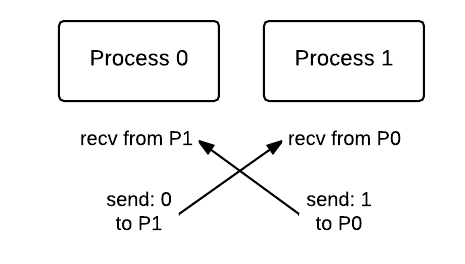

Communication Patterns in MPI: Basic message passing¶
These examples illustrate some of the fundamental patterns in software for distributed systems and systems where individual processes, not threads, are coordinating by communication with each other via message passing. Now we get to see the message passing part of the of name MPI (Message Passing Interface)!
04. Message passing deadlock, using Send-Receive of a single value¶
file: patternlets/MPI/04.messagePassingDeadlock/messagePassingDeadlock.c
Build inside 04.messagePassingDeadlock directory:
make messagePassingDeadlock
Execute on the command line inside 04.messagePassingDeadlock directory:
mpirun -np <number of processes> ./messagePassingDeadlock
This example shows the pattern of sending and receiving messages between various processes. The following code displays 2-way communication between pairs with message passing occurring between pairs of odd and even rank processes.
(rank 0, rank 1), (rank 2, rank 3), (rank 4, rank 5), … ,
On lines 32 - 34, each odd process (1, 3, 5, …) will both receive from and send a message to the process whose id is one less than it (its neighbor to the left in the pairs shown above). The message that is being passed is the rank of the current process (set on line 30). On lines 37 - 39, each even process (0, 2, 4, …) is receiving from and sending to the process whose id is one greater than it (its neighbor to the right).
To do:
Find documentation for the MPI functions MPI_Recv and MPI_Send. Make sure that you know what each parameter is for.
Conceptually, the running code is executing like this for 2 processes, where time is moving from top to bottom:
1 2 3 4 5 6 7 8 9 10 11 12 13 14 15 16 17 18 19 20 21 22 23 24 25 26 27 28 29 30 31 32 33 34 35 36 37 38 39 40 41 42 43 44 45 46 47 48 49 50 | /* messagePassingDeadlock.c
* ... illustrates deadlock with MPI_Send() and MPI_Recv() commands...
*
* Joel Adams, Calvin College, November 2009.
* Modified by Hannah Sonsalla, Macalester College 2017.
*
* Usage: mpirun -np N ./messagePassing
*
* Exercise:
* - Compile and run, using more than one process.
* - Use source code to trace execution.
* - Why does this fail?
*/
#include <stdio.h>
#include <mpi.h>
int odd(int number) { return number % 2; }
int main(int argc, char** argv) {
int id = -1, numProcesses = -1;
int sendValue = -1, receivedValue = -1;
MPI_Status status;
MPI_Init(&argc, &argv);
MPI_Comm_rank(MPI_COMM_WORLD, &id);
MPI_Comm_size(MPI_COMM_WORLD, &numProcesses);
if (numProcesses > 1) {
sendValue = id;
if ( odd(id) ) { // odd processors receive from their 'left neighbor', then send
MPI_Recv(&receivedValue, 1, MPI_INT, id-1, 2,
MPI_COMM_WORLD, &status);
MPI_Send(&sendValue, 1, MPI_INT, id-1, 1, MPI_COMM_WORLD);
} else { // even processors receive from their 'right neighbor', then send
MPI_Recv(&receivedValue, 1, MPI_INT, id+1, 1,
MPI_COMM_WORLD, &status);
MPI_Send(&sendValue, 1, MPI_INT, id+1, 2, MPI_COMM_WORLD);
}
printf("Process %d of %d computed %d and received %d\n",
id, numProcesses, sendValue, receivedValue);
} else if ( !id) { // only process 0 does this part
printf("\nPlease run this program using -np N where N is positive and even.\n\n");
}
MPI_Finalize();
return 0;
}
|
To do:
What happens when you run this code with 2 processes? On linux systems, typing control-c will stop a running process, including this MPI code. Can you explain why this program deadlocks and how we might avoid this situation?
05. Message passing 1, using Send-Receive of a single value¶
file: patternlets/MPI/05.messagePassing/messagePassing.c
Build inside 05.messagePassing directory:
make messagePassing
Execute on the command line inside 05.messagePassing directory:
mpirun -np <number of processes> ./messagePassing
The previous example highlights how a deadlock might occur from message passing. Next we will show one possible solution for fixing this problem. We can avoid a deadlock by simply reversing the order of one of the receive/send pairs. Now, we have one receive/send ordering and one send/receive ordering for each process in the pair sharing data. Note this in the code example further below. As shown in the following diagram, where time is moving from top to bottom, even processes are receive/send pairs and odd processes are send/receive pairs.

To do:
Compile and run using 4, 6, 8 and 10 processes. Note that the program now completes without deadlocking. Why does reversing one of the receive/send pairs allow us to avoid the deadlock situation all together?
Run using 5 processes. What process threw an error and why was an error thrown? Hint: See diagram below.

1 2 3 4 5 6 7 8 9 10 11 12 13 14 15 16 17 18 19 20 21 22 23 24 25 26 27 28 29 30 31 32 33 34 35 36 37 38 39 40 41 42 43 44 45 46 47 48 49 50 51 52 | /* messagePassing.c
* ... illustrates the use of the MPI_Send() and MPI_Recv() commands...
* Joel Adams, Calvin College, November 2009.
* Modified by Hannah Sonsalla, Macalester College 2017.
*
* Usage: mpirun -np N ./messagePassing
*
* Exercise:
* - Compile and run, using N = 4, 6, 8, and 10 processes.
* - Use source code to trace execution.
* - Explain what each process:
* -- sends
* -- receives
* -- outputs.
* - Run using N = 5 processes. What happens?
*/
#include <stdio.h>
#include <mpi.h>
int odd(int number) { return number % 2; }
int main(int argc, char** argv) {
int id = -1, numProcesses = -1;
int sendValue = -1, receivedValue = -1;
MPI_Status status;
MPI_Init(&argc, &argv);
MPI_Comm_rank(MPI_COMM_WORLD, &id);
MPI_Comm_size(MPI_COMM_WORLD, &numProcesses);
if (numProcesses > 1) {
sendValue = id;
if ( odd(id) ) { // odd processors send, then receive
MPI_Send(&sendValue, 1, MPI_INT, id-1, 1, MPI_COMM_WORLD);
MPI_Recv(&receivedValue, 1, MPI_INT, id-1, 2,
MPI_COMM_WORLD, &status);
} else { // even processors receive, then send
MPI_Recv(&receivedValue, 1, MPI_INT, id+1, 1,
MPI_COMM_WORLD, &status);
MPI_Send(&sendValue, 1, MPI_INT, id+1, 2, MPI_COMM_WORLD);
}
printf("Process %d of %d computed %d and received %d\n",
id, numProcesses, sendValue, receivedValue);
} else if ( !id) { // only process 0 does this part
printf("\nPlease run this program using -np N where N is positive and even.\n\n");
}
MPI_Finalize();
return 0;
}
|
Note
This solution avoids the deadlock by ensuring that one of the processes in the pair will send its value to the neighbor process who is blocked waiting to receive the message being sent. Then it is ready to send its own message to its partner in the pair. This is a common pattern that occurs in MPI programs when pairs of processes need to exchange information.
06. Message passing 2, using Send-Receive of an array of values¶
file: patternlets/MPI/06.messagePassing2/messagePassing2.c
Build inside 06.messagePassing2 directory:
make messagePassing2
Execute on the command line inside 06.messagePassing2 directory:
mpirun -np <number of processes> ./messagePassing2
The messages sent and received by processes can be of types other than integers. Here the message that is being passed is a string (array of chars). This example follows the previous message passing examples in that it passes strings between pairs of odd and even rank processes.
We use dynamic memory allocation for the sendString and receivedString. Dynamic memory allocation lets a program obtain more memory space while running or release memory space if it is not needed. We can use this type of memory allocation to manually handle memory space. The function malloc on lines 36 and 37 allocates a block of SIZE bytes of memory for the sendString and receivedString.
To do:
Review documentation for the MPI functions MPI_Recv and MPI_Send; make sure you understand what the second parameter is for in each case and why the code below is written as it is.
What is the free function doing on lines 56 and 57? Why must we apply the free function to both sendString and receivedString?
1 2 3 4 5 6 7 8 9 10 11 12 13 14 15 16 17 18 19 20 21 22 23 24 25 26 27 28 29 30 31 32 33 34 35 36 37 38 39 40 41 42 43 44 45 46 47 48 49 50 51 52 53 54 55 56 57 58 59 60 61 62 63 64 | /* messagePassing2.c
* ... illustrates using MPI_Send() and MPI_Recv() commands on arrays...
* While this example sends and receives char arrays (strings),
* the same approach works on arrays of numbers or other types.
* Joel Adams, Calvin College, September 2013.
*
* Usage: mpirun -np N ./messagePassing2
*
* Exercise:
* - Compile and run, varying N: 1, 2, 4, 8.
* - Trace execution using source code.
* - Compare to messagePassing1.c; note send/receive differences.
*/
#include <stdio.h> // printf()
#include <mpi.h> // MPI
#include <stdlib.h> // malloc()
#include <string.h> // strlen()
int odd(int number) { return number % 2; }
int main(int argc, char** argv) {
int id = -1, numProcesses = -1, length = -1;
char * sendString = NULL;
char * receivedString = NULL;
char hostName[MPI_MAX_PROCESSOR_NAME];
MPI_Status status;
const int SIZE = (32+MPI_MAX_PROCESSOR_NAME) * sizeof(char);
MPI_Init(&argc, &argv);
MPI_Comm_rank(MPI_COMM_WORLD, &id);
MPI_Comm_size(MPI_COMM_WORLD, &numProcesses);
MPI_Get_processor_name (hostName, &length);
if (numProcesses > 1 && !odd(numProcesses) ) {
sendString = (char*) malloc( SIZE );
receivedString = (char*) malloc( SIZE );
// sprintf: write to string
sprintf(sendString, "Process %d is on host \"%s\"", id, hostName);
if ( odd(id) ) { // odd processes send, then receive
MPI_Send(sendString, strlen(sendString)+1,
MPI_CHAR, id-1, 1, MPI_COMM_WORLD);
MPI_Recv(receivedString, SIZE, MPI_CHAR, id-1, 2,
MPI_COMM_WORLD, &status);
} else { // even processes receive, then send
MPI_Recv(receivedString, SIZE, MPI_CHAR, id+1, 1,
MPI_COMM_WORLD, &status);
MPI_Send(sendString, strlen(sendString)+1,
MPI_CHAR, id+1, 2, MPI_COMM_WORLD);
}
printf("\nProcess %d of %d received the message:\n\t'%s'\n",
id, numProcesses, receivedString);
free(sendString);
free(receivedString);
} else if ( !id) { // only process 0 does this part
printf("\nPlease run this program using -np N where N is positive and even.\n\n");
}
MPI_Finalize();
return 0;
}
|
07. Message passing 3, using Send-Receive with master-worker pattern¶
file: patternlets/MPI/07.messagePassing3/messagePassing3.c
Build inside 07.messagePassing3 directory:
make messagePassing3
Execute on the command line inside 07.messagePassing3 directory:
mpirun -np <number of processes> ./messagePassing3
Sending and receiving often occurs in pairs. We will investigate a scenario in which this is not the case. Suppose we have four processes, 0 through 3, all of which are arranged in a “ring”. We want each process to communicate a modified string containing sequential ranks to the next process. Process 0 begins by sending its rank to process 1. Process 1 receives a string containing a 0. Next, process 1 adds its rank to the string and sends the string to process 2. Then, process 2 receives the string containing 0 and 1, and so on. This continues until process 0 receives the final string from the last process (process with the largest rank). Thus, process 0 is the beginning and ending location of the “ring”. This type of circular dependency can be thought of like this:

To do:
In our example, when will this communication pattern fail to execute properly and finish? What is needed to be able to guarantee completion?
1 2 3 4 5 6 7 8 9 10 11 12 13 14 15 16 17 18 19 20 21 22 23 24 25 26 27 28 29 30 31 32 33 34 35 36 37 38 39 40 41 42 43 44 45 46 47 48 49 50 51 52 53 54 55 56 57 58 59 60 61 62 63 64 65 66 67 68 69 70 71 72 73 74 75 76 77 78 79 | /* messagePassing3.c
* ... illustrates the use of MPI_Send() and MPI_Recv(),
* in combination with the master-worker pattern.
*
* Joel Adams, Calvin College, November 2009.
*
* Usage: mpirun -np N ./messagePassing3
*
* Exercise:
* - Run the program, varying the value of N from 1-8.
* - Explain the behavior you observe.
*/
#include <stdio.h> // printf()
#include <string.h> // strlen()
#include <mpi.h> // MPI
#define MAX 256
int main(int argc, char** argv) {
int id = -1, numProcesses = -1;
char sendBuffer[MAX] = {'\0'};
char recvBuffer[MAX] = {'\0'};
MPI_Status status;
MPI_Init(&argc, &argv);
MPI_Comm_rank(MPI_COMM_WORLD, &id);
MPI_Comm_size(MPI_COMM_WORLD, &numProcesses);
if (numProcesses > 1) {
if ( id == 0 ) { // master:
sprintf(sendBuffer, "%d", id); // create msg
MPI_Send(sendBuffer, // msg sent
strlen(sendBuffer) + 1, // num chars + NULL
MPI_CHAR, // type
id+1, // destination
1, // tag
MPI_COMM_WORLD); // communicator
MPI_Recv(recvBuffer, // msg received
MAX, // buffer size
MPI_CHAR, // type
numProcesses-1, // sender
1, // tag
MPI_COMM_WORLD, // communicator
&status); // recv status
printf("Process #%d of %d received %s\n", // show msg
id, numProcesses, recvBuffer);
} else { // workers:
MPI_Recv(recvBuffer, // msg received
MAX, // buffer size
MPI_CHAR, // type
MPI_ANY_SOURCE, // sender (anyone)
1, // tag
MPI_COMM_WORLD, // communicator
&status); // recv status
printf("Process #%d of %d received %s\n", // show msg
id, numProcesses, recvBuffer);
// build msg to send by appending id to msg received
sprintf(sendBuffer, "%s %d", recvBuffer, id);
MPI_Send(sendBuffer, // msg to send
strlen(sendBuffer) + 1, // num chars + NULL
MPI_CHAR, // type
(id+1) % numProcesses, // destination
1, // tag
MPI_COMM_WORLD); // communicator
}
} else {
printf("\nPlease run this program with at least 2 processes\n\n");
}
MPI_Finalize();
return 0;
}
|
Note
Examine the output of this code, noticing how each process sends the results of its ‘work’ to the next process. This code forms the basis of what is called the pipeline pattern. You might want to research more about when this can be useful. Though they don’t in this example, imagine that the processes could overlap by having each process ‘stream’ partially completed parts of its work to the next process in line for further processing.
Continue on to see more interesting patterns of communication using message passing.

{kind=link}